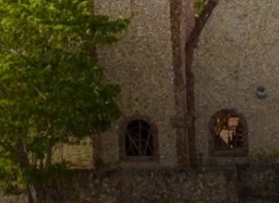
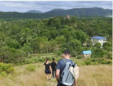
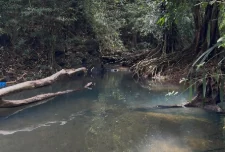
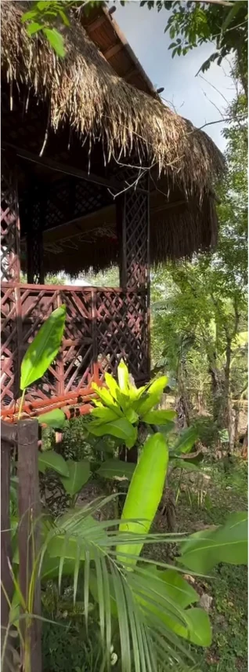
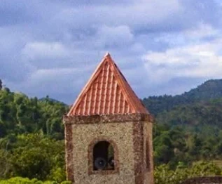
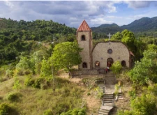
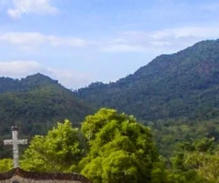
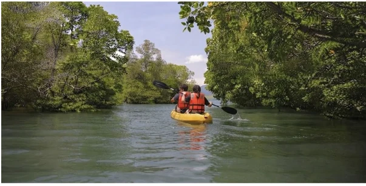
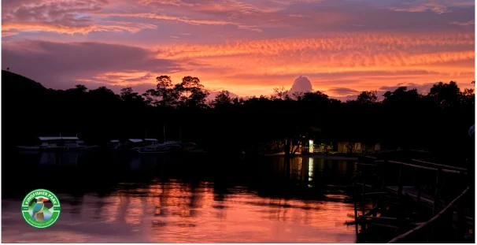

01
Community immersion
Meet the community and discover their connection with the land.

Step away from the usual tourist spot and experience the quiet beauty of Malbato Village—its people, nature, culture, and way of life.
EXPLORE TOUR RATES ↗Discover Kingfisher Park through Biodiversity Enhancement, Regenerative Agriculture, and Enterprise.
Protect wildlife and restore ecosystems; grow food while caring for the land; create livelihood and learning opportunities with the people of Malbato Village.
The nature trail includes community immersion, birdwatching, regenerative agriculture, hiking, Kilit Creek and learning stops. Start early to beat the heat; contact the park to arrange the schedule.
Meet the community and discover their connection with the land.
Observe the diversity of local birdlife in its natural habitat.
Explore sustainable farming practices that restore the land and grow food.

Walk through nature and take in the surrounding landscape.

Rest, enjoy lunch and take a refreshing swim, subject to site conditions.

Journey upward to scenic views where nature meets the sky.
Relax with coffee, tea and snacks surrounded by greenery.

Discover how young people are learning to grow food and care for the land.

A peaceful stop with views of the surrounding landscape.


Enjoy a Filipino meal featuring fresh catch and farm vegetables, then unwind with coffee, tea and snacks at Tahanan Center or the greenhouse.
Visit the regenerative school garden and discover how the community is caring for its land and sharing practical knowledge.
EXPLORE COMMUNITY STORIES →After the day trail, stay for sunset. Paddle quietly through the mangroves and watch the landscape change as evening arrives. Firefly and plankton viewing are subject to weather, tide and natural conditions.
VIEW TOUR B RATES →

Community, birds, the regenerative farm, hikes, Kilit Creek, retreat, school farm and chapel. Guided throughout. Meals included.
All of Tour A, plus the sunset mangrove experience, plankton viewing and the firefly boardwalk. Guided throughout. Meals included.
| Paying adults | Tour A / person | Tour B / person |
|---|---|---|
| 10 | ₱2,200 | ₱3,200 |
| 9 | ₱2,300 | ₱3,300 |
| 8 | ₱2,400 | ₱3,400 |
| 7 | ₱2,500 | ₱3,500 |
| 6 | ₱2,600 | ₱3,600 |
| 5 | ₱2,700 | ₱3,700 |
| 4 | ₱2,800 | ₱3,800 |
| 3 | ₱2,900 | ₱3,900 |
| 2 | ₱3,000 | ₱4,000 |
| 1 | ₱4,500 | ₱5,500 |
Included: Tour A and Tour B include meals. Transport to the park is not included. Contact Kingfisher Park to arrange transport.
Children aged 3 and below: free, without a meal. Children aged 4–12: 50% of the adult per-person rate based on the number of paying adults. Children do not count toward the adult group-size tier.
Early Riser: add ₱150 per head, or ₱300 for solo. This supplement requires confirmation of the eligible participants and final schedule.
Scheduling: the nature trail is a full-day experience tailored to group pace. Start early to avoid the heat; confirm the day and meeting time with park staff. Weather, tides and operational conditions affect activities.
Begin your visit at Tahanan Center, subject to staff confirmation of current arrival arrangements.
Tour dates, meeting times, transportation and payment arrangements must be confirmed by Kingfisher Park staff.